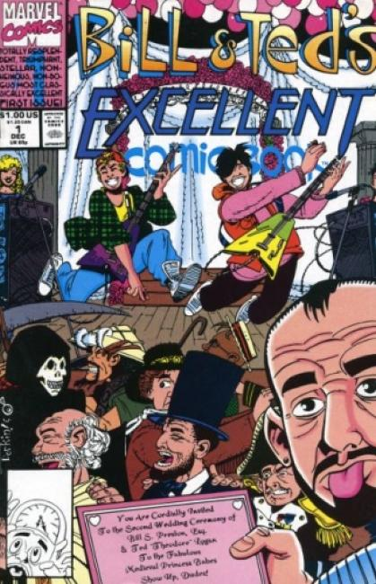

Bill & Ted's Excellent Adventure is a 1989 American science fiction comedy film directed by Stephen Herek and written by Chris Matheson and Ed Solomon. It stars Alex Winter, Keanu Reeves, and George Carlin. The plot follows slackers Bill (Winter) and Ted (Reeves), who travel through time to assemble historical figures for their high school history presentation. Box office earned $40.5 Million.
Bill & Ted's Bogus Journey is a 1991 American science fiction comedy film, and the directing debut of Pete Hewitt. It is the second film in the Bill & Ted franchise, and a sequel to Bill & Ted's Excellent Adventure (1989). Keanu Reeves, Alex Winter and George Carlin reprise their roles. The film's original working title was Bill & Ted Go to Hell and the film's soundtrack featured the song "Go to Hell" by Megadeth, which Dave Mustaine wrote for the film. Despite mixed reviews from film critics, like its predecessor, the film has since gained a cult following. Box office earned $38 Million.
In addition to the films, the franchise has spawned both an animated television series (with Winter and Reeves reprising their roles) and a live-action television series in 1990 and 1992 respectively, video games, and comic books.

The color comic book adaptation of the bodacious film event starring none other than...ta daaa...Bill & Ted! Everything's bogus when they're killed and replaced by robots!

Death Takes A Most Heinous Holiday. After Death quits and takes a holiday, zombies, with no place to go, show up at Bill & Ted's door and it's up to the duo to retrieve Death and get him back on the job.

Bill & Ted's Excellent Cereal was a cereal based on the Bill & Ted movies and cartoon of the late 1980s and early 1990s. It was promoted with the branding slogan "A Most Awesome Breakfast Adventure".